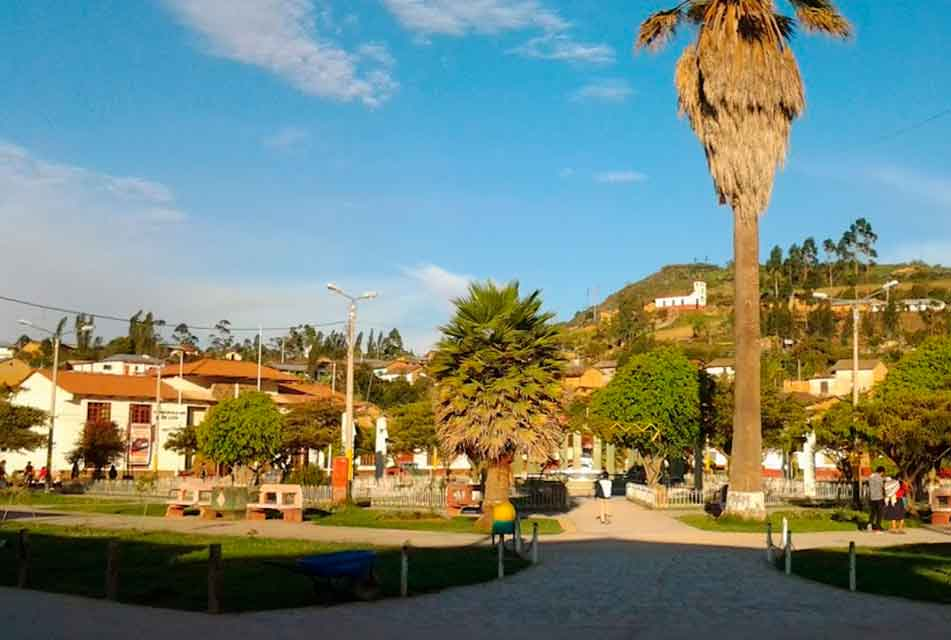

Conoce Luya
Tradición, arqueología y paisajes históricos en Amazonas
Luya es una provincia de la región Amazonas con gran valor cultural, histórico y natural. Su capital provincial es Lámud, una localidad tradicional que sirve como punto de acceso a diferentes atractivos arqueológicos y naturales.
Esta ruta es recomendada para quienes desean conocer parte del legado de la cultura Chachapoyas. Entre sus atractivos más visitados se encuentran las Cavernas de Quiocta y los Sarcófagos de Karajía, dos lugares que combinan aventura, historia y paisaje andino.

Ubicación
Provincia de Luya, región Amazonas
Atractivos cercanos
Lámud, Quiocta, Karajía y rutas arqueológicas
Ideal para
Turismo cultural, historia, caminatas y fotografía